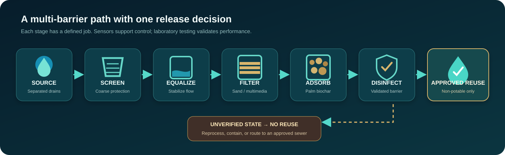

AI supports maintenance
Analytics can flag abnormal behaviour, possible sensor drift, and emerging filter deterioration. Every alert must show its contributing signals.
AI predicts and explains. Validated rules protect the reuse outlet.
MAWRID treats source-separated ablution greywater and uses explainable monitoring to detect deterioration before non-potable reuse.

Concept-stage architecture. Performance targets are not measured results.
The system combines physical treatment, IoT observations, decision support, and local fail-safe control.
Analytics can flag abnormal behaviour, possible sensor drift, and emerging filter deterioration. Every alert must show its contributing signals.
AI predicts and explains. Validated rules protect the reuse outlet.
Online measurements support operation. They do not replace validated chemical and microbial testing.
A missing critical signal, failed process condition, or power loss closes the valve locally.
Simulated values demonstrate system logic. They are not treatment-performance evidence.
All demonstration release conditions are present. No anomaly is active.
AI advice: Continue monitoring.